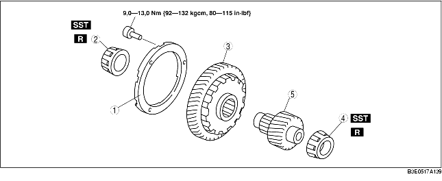

1. Verwijder de onderdelen in de aangegeven volgorde, zie de tabel.
2. Plaats de onderdelen in de omgekeerde volgorde.

1. Verwijder het lager aan de kant van het secundaire tandwiel met SST.
2. Verwijder het lager aan de kant van het uitgaand tandwiel met SST.
1. Plaats het uitgaand tandwiel met SST op het secundaire tandwiel.
2. Plaats het lager aan de kant van het uitgaand tandwiel met SST en een geschikt stempel.
3. Plaats het lager aan de kant van het secundaire tandwiel met SST en een geschikt stempel.